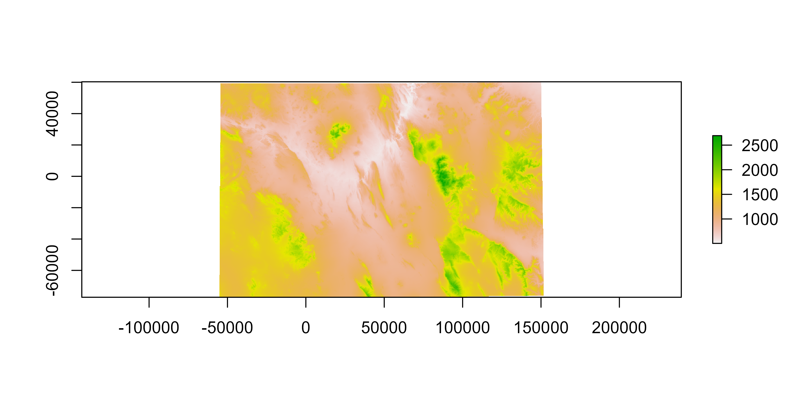

An adventure in using rayshader.
I stumbled onto the wonderful rayshader while trying to beef up my R spatial skills (Morgan-Wall 2020). Experimenting with rayshading is a wonderful rabbit hole. Inspired by (but certainly not capable of replicating) the re-rendering of historic maps by numerous folks on Twitter I decided to take a go at it.
State of Virginia- Department of the Interior - 1957
— Sean Conway (@geo_spatialist) July 28, 2020
3D terrain render#arcgispro #blender #Virginia #GIS #geospatial #dataviz #3dart pic.twitter.com/2OINJdYo0F
Beautiful Amami Ōshima, an island in southwest Japan, Kagoshima-ken. Part of the Geological Map of Japan Series, by the Geological Survey of Japan, 1994. Used bathymetry data this time.#rayshader adventures, an #rstats tale pic.twitter.com/A7qvnKmtPx
— flotsam (@researchremora) September 24, 2020
I’m going to preface this with, I have no idea what I’m doing! The code my be ugly and the outputs are not perfect, certainly not on the level of a skilled designer using ArcPro and Blender. But this is for fun. I thought it would be neat to apply a rayshader to a topo map of the Big Bend area of Texas. It has a lot of relief and some interesting features, I also know USGS has some cool maps of the region. Finally, this is heavily based on the tutorial provided by the package author.
I downloaded a GeoTIFF from this cool downloader that USGS has for historic maps: https://ngmdb.usgs.gov/topoview/viewer/#10/29.3774/-103.6938. There is a geoPDF option also, I really want to use it because overlaying vectors would be awesome. I couldn’t figure out how to read them in. If anyone has tips, let me know!
The elevation data was obtained using the handy elevatr package (Hollister and Tarak Shah 2017).
library(raster)
library(rayshader)
library(elevatr)First, download the TIFF. You can use the downloader, or the direct link below if you want to recreate what I did.
topo_map <- raster::brick("https://prd-tnm.s3.amazonaws.com/StagedProducts/Maps/HistoricalTopo/GeoTIFF/TX/TX_Chisos%20Mountains_122109_1985_100000_geo.tif")
topo_map <- raster::stack(topo_map)Now we can get the elevation data using elevatr:
elevation <- get_elev_raster(raster(topo_map), z = 9)
Now we need to line up the elevation data and the topo map. I don’t want the rayshading to extend past the neatline on the map.1 So we are going to crop the elevation data to the neatline extents, then fill the remaining extent to a value somewhere in between the min and max elevation. I chose 450.
## crop elevation to the full map extent (past neatline)
elevation <- raster::crop(elevation, extent(topo_map))
##this raster will help knockdown the elevation outside the
## neatline in the physical map
base_raster <- elevation * 0 + 450
## I want to crop the elevation raster to the neatlines
x <- c(-104.000, -104.000, -103.000, -103.000)
y <- c(29.000, 29.500, 29.000, 29.500)
xy <- cbind(x,y)
S <- SpatialPoints(xy, proj4string = CRS("+proj=longlat +ellps=clrk66 +datum=NAD27 +no_defs "))
S <- spTransform(S, crs(topo_map))
interior_elevation <- raster::crop(elevation, extent(S))
elevation <- merge(interior_elevation, base_raster)Now we have the elevation raster. The raw raster file we have for the topo map needs to be addressed. It will be transformed to a 3 channel RGB array that rayshader can use to “drape” the layer on top of our rendered hills.
names(topo_map) <- c("r", "g", "b")
topo_r <- rayshader::raster_to_matrix(topo_map$r)
topo_g <- rayshader::raster_to_matrix(topo_map$g)
topo_b <- rayshader::raster_to_matrix(topo_map$b)
topo_rgb_array <- array(0, dim = c(nrow(topo_r), ncol(topo_r), 3))
topo_rgb_array[,,1] <- topo_r/255
topo_rgb_array[,,2] <- topo_g/255
topo_rgb_array[,,3] <- topo_b/255
## the array needs to be transposed, just because.
topo_rgb_array <- aperm(topo_rgb_array, c(2,1,3))First we convert the elevation raster to a matrix using raster_to_matrix(). The ray_shade() function calculates a shadow map from the elevation matrix, the ambient_shade() calculates the Ambient Occlusion Shadow Map. I had to look this up (https://en.wikipedia.org/wiki/Ambient_occlusion), basically this makes the surface textures more realistic by calculating how dark they are based on sun exposure. Now we can pipe everything together:
elev_mat <- raster_to_matrix(elevation)
ray_shadow <- ray_shade(elev_mat, sunaltitude = 40, zscale = 30, multicore = TRUE)
ambient_shadow <- ambient_shade(elev_mat, zscale = 30)
elev_mat %>%
sphere_shade(texture = "bw") %>%
add_overlay(topo_rgb_array) %>%
add_shadow(ray_shadow, max_darken = 0.7) %>%
add_shadow(ambient_shadow, 0.25) %>%
plot_map()The overlay (topo map) is scaled to the elevation matrix. So if we want something in higher resolution, download a higher resolution elevation matrix or take advantge of the resize_matrix() function. I am not going to cover it here for sake of processing time, but you can easily scale this up to original topo map resolution. However, if you go too large, you will run into memory allocation issues.
Finally, by manipulating the ray_shade() function, the sunangle and sunaltitude arguments in particular, we can render shadows over the course of the day. I am not going to go into the details, Tyler Morgan Wall introduces this in this masterclass. But you can make some neat animations utilizing this function as seen below.
Hollister, Jeffrey, and Tarak Shah. 2017. Elevatr: Access Elevation Data from Various Apis. http://github.com/usepa/elevatr.
Morgan-Wall, Tyler. 2020. Rayshader: Create Maps and Visualize Data in 2D and 3D. https://github.com/tylermorganwall/rayshader.
There is a little finger of contour line data extending past the neatline. First I think that is an extremely cool feature on this map. Second, I didn’t bother trying to rayshade that portion. But that attention to detail is why I’m not a cartographer.↩︎